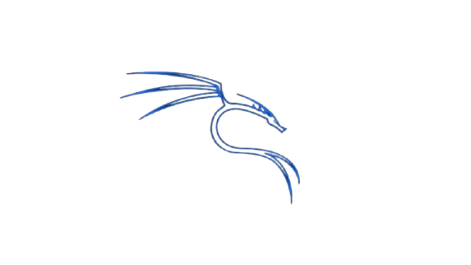

.png)

¿Qué es? Kali Linux
Kali Linux es la distribución más reconocida en el ámbito de la ciberseguridad y hacking ético. Basada en Debian, incluye una amplia colección de herramientas para pruebas de penetración, análisis forense y auditorías. Es la opción predilecta para profesionales que buscan un entorno de trabajo completo y listo para usar.
¿Por qué esta distro?
Si trabajas en ciberseguridad, Kali es imprescindible. Ofrece todas las herramientas que necesitas preinstaladas y configuradas, desde reconocimiento de redes hasta explotación de vulnerabilidades. Un sistema diseñado por profesionales para profesionales.
Características principales
Herramientas de Pentesting
Kali incluye más de 600 herramientas de seguridad preinstaladas: Metasploit Framework, Burp Suite, Wireshark, Nmap y muchas más. Todo lo que necesitas para pruebas de penetración profesionales.
Auditoría de Redes
Herramientas especializadas para análisis de redes, escaneo de puertos, detección de vulnerabilidades y mapeo de infraestructuras. Descubre debilidades antes que los atacantes.
Análisis Forense
Capacidades completas de análisis forense digital con herramientas como Volatility y The Sleuth Kit. Investiga incidentes de seguridad y recupera datos.
Hacking Ético Certificado
Kali es la plataforma oficial para certificaciones CEH (Certified Ethical Hacker) y OSCP (Offensive Security Certified Professional). Prepárate para las certificaciones más reconocidas del sector.
Comunidad de Seguridad
Acceso a una comunidad global de investigadores de seguridad, profesionales de pentesting y entusiastas. Aprende de los mejores en el campo.
Rolling Release
Actualizaciones constantes de herramientas de seguridad. Mantente al día con las últimas técnicas de ataque y defensas conforme se descubren nuevas vulnerabilidades.
Herramientas De Kali linux
Imagina tener un taller mecánico con todas las herramientas del mundo, pero para la seguridad digital. Kali no es solo un sistema, es un arsenal listo para cualquier desafío técnico.
Desde el análisis de redes domésticas hasta la protección de grandes servidores empresariales. Kali es la navaja suiza de la ciberseguridad, con herramientas para cada tarea, cada ataque y cada defensa.
Herramientas Destacadas
Metasploit Framework
Framework de hacking más poderoso del mundo
Burp Suite
Plataforma líder para testing de aplicaciones web
Wireshark
Analizador de protocolos de red en tiempo real
Nmap
Explorador y auditor de seguridad de redes
John the Ripper
Herramienta de cracking de contraseñas
Aircrack-ng
Suite completa para auditoría de redes inalámbricas